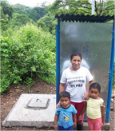

Get Involved
We need everyone and anyone. If you are a student, teacher, executive, artist, or just someone with great ideas, the 2.6 billion toilet-less can use your help! Let us know how you can contribute your time, talent, or donation.
Donate
- Your donation of any amount helps support our work in Nicaragua.
- Donations to support this project will be used to cover the expenses of the materials needed to build the latrines.
Everything Helps!
Donate - $15 - Sand
- $30 - Cement
- $50 - Bricks
- $160 - Sheltering
- $300 - Family double pit latrine
Volunteer
- Plan an event - Tell us your talent and we will help you use your skills to promote the sanitation cause! Email Rachel at rachel.sanisalud@gmail.com.
- Follow us on your blog, website, or Facebook page.